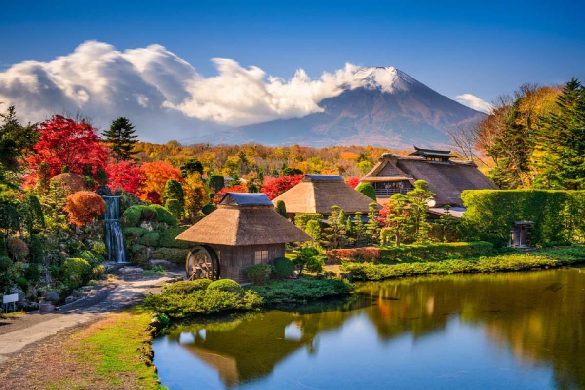
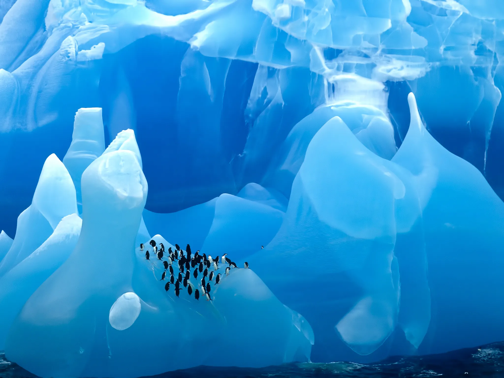
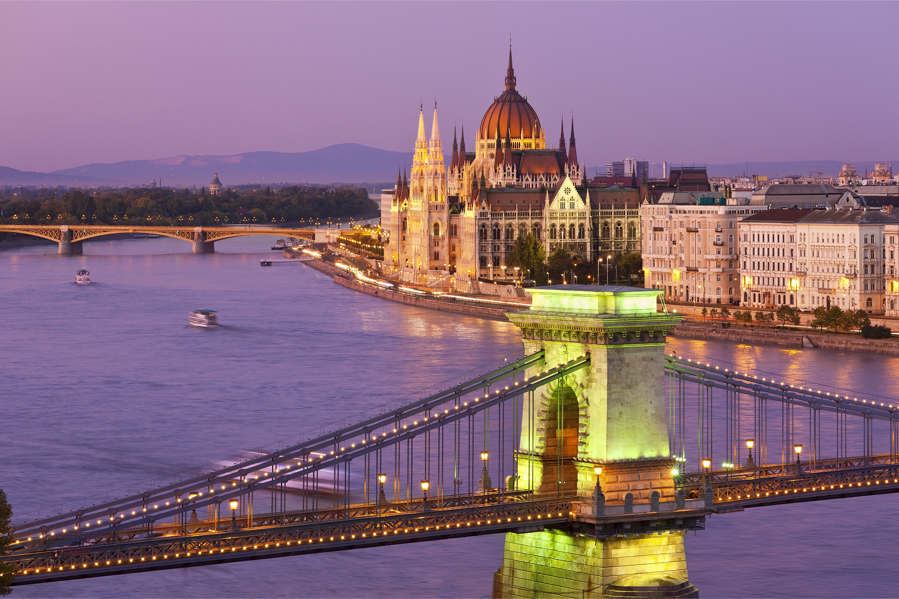

.jpeg) Pailón del Diablo, Ecuador
Situated in the Sonoran Desert of southern California is the palm oasis of Palm Springs. The city
features the Santa Rosa and San Jacinto mountain ranges. It manifests above-par, well-preserved
mid-century modern architecture, a vivacious arts scene, and numerous outdoor activities
opportunities. The iconic architecture includes buildings designed by world-renowned architects like
Richard Neutra and Albert Frey. There are several galleries and art museums that a visitor can check
in the city. With Palm Springs, outdoor activities range from mountain hiking to rock climbing,
golfing, and lounging by the pool. Wonderful activities, framed interactive, on the scenic backdrop
of this city—rugby mountains, palm trees, and clear skies. This package offers the best of both
worlds—Palm Springs has it all: desert landscapes, architectural history, and modern amenities
making it so popular for people looking to stay without a fuss in style.
Pailón del Diablo, Ecuador
Situated in the Sonoran Desert of southern California is the palm oasis of Palm Springs. The city
features the Santa Rosa and San Jacinto mountain ranges. It manifests above-par, well-preserved
mid-century modern architecture, a vivacious arts scene, and numerous outdoor activities
opportunities. The iconic architecture includes buildings designed by world-renowned architects like
Richard Neutra and Albert Frey. There are several galleries and art museums that a visitor can check
in the city. With Palm Springs, outdoor activities range from mountain hiking to rock climbing,
golfing, and lounging by the pool. Wonderful activities, framed interactive, on the scenic backdrop
of this city—rugby mountains, palm trees, and clear skies. This package offers the best of both
worlds—Palm Springs has it all: desert landscapes, architectural history, and modern amenities
making it so popular for people looking to stay without a fuss in style.

Oshino Hakkai, Japan
Situated in Mauritius is another very unique site in geology, spanning five acres under its "Seven
Colored Earths." These are vibrantly undulating dunes in hues of red, brown, violet, green, blue,
and purple. This striking phenomenon was created by the weathering of volcanic rock, resulting in
these distinct layers of color. Other than the Colored Earths, there is the Chamarel Waterfall,
which is one of the highest on the island. It has a flourishing space of nature with views and
scenes informative of their geological history in surroundings of very beautiful views.
.jpeg) Abruzzo, Italy
Stretching from the heart of the Apennines to the Adriatic Sea on the peninsula's southeastern side,
Abruzzo, Italy has long been one of the country's most overlooked destinations despite its unspoiled
villages, picturesque Trabocchi Coast, and stunning natural escapes. Over the past few years,
however, it has gone from a sleepy underdog to an ambitious harbinger of slow travel, sustainable
gastronomy, and conscious hospitality. Villa Corallo, a 19th-century mansion near Civitella del
Tronto was transformed into a five-star hotel in 2019. Dimore Montane, an eco-lodge opened in 2020
in Majella National Park, marries glamping with environmentally-friendly facilities with a zero
waste policy. Meanwhile, restaurants like Bottega Culinaria in San Vito Chietino and Materia Prima
in Castel di Sangro are redefining the region as one of Italy's most exciting food hotspots for
their innovative and sustainable takes on local produce and traditional dishes (in case Niko
Romito's three-Michelin-starred Reale wasn't enough). And completing construction this Spring is Via
Verde dei Trabocchi: a cycling and pedestrian path along the Adriatic sea that's being built on a
disused railway route. — Marianna Cerini
Abruzzo, Italy
Stretching from the heart of the Apennines to the Adriatic Sea on the peninsula's southeastern side,
Abruzzo, Italy has long been one of the country's most overlooked destinations despite its unspoiled
villages, picturesque Trabocchi Coast, and stunning natural escapes. Over the past few years,
however, it has gone from a sleepy underdog to an ambitious harbinger of slow travel, sustainable
gastronomy, and conscious hospitality. Villa Corallo, a 19th-century mansion near Civitella del
Tronto was transformed into a five-star hotel in 2019. Dimore Montane, an eco-lodge opened in 2020
in Majella National Park, marries glamping with environmentally-friendly facilities with a zero
waste policy. Meanwhile, restaurants like Bottega Culinaria in San Vito Chietino and Materia Prima
in Castel di Sangro are redefining the region as one of Italy's most exciting food hotspots for
their innovative and sustainable takes on local produce and traditional dishes (in case Niko
Romito's three-Michelin-starred Reale wasn't enough). And completing construction this Spring is Via
Verde dei Trabocchi: a cycling and pedestrian path along the Adriatic sea that's being built on a
disused railway route. — Marianna Cerini

Antarctica
The pandemic shutdown created a compelling reason to visit Antarctica in 2022: See how the whales,
seals, and penguins react after nearly two years without seeing humans. New polar-class expedition
ships and new ways to get to the White Continent are reasons to pack your boots too. Viking
Expeditions will be in Antarctica for the first time in 2022 with new, twin 378-passenger expedition
ships. Ponant's new 270-passenger Le Commandant Charcot introduces eco-friendlier sailing, as the
first hybrid-electric ship fueled by liquified natural gas (rather than heavy fuel). Quark
Expeditions' long-awaited 199-passenger Ultramarine delivers exciting heli-hiking adventures via two
eight-seat twin-engine helicopters. Hit a craps table in between icy exploration on the luxurious
new all-suite 200-passenger Crystal Endeavor. Silversea Cruises' posh, 144-passenger, all-suite
Silver Explorer returns with a debut travel option: Skip the notorious (for rough water) Drake
Passage and catch a private flight directly from Chile to Antarctica to board the ship. — Fran
Golden
.jpeg) Petra, Jordan
Located between Amman and Aqaba, Petra, the "Rose City" of Jordan, is an ancient archaeological site
carved into rose-colored rock. It has been listed on the UNESCO World Heritage site as well as one
of the New Seven Wonders of the World. Petra is famous for its intricate, Hellenistic-style
architecture, such as the iconic Treasury building. Guests visit this city—full of chances for
wandering through the remains of this great city, hiking in striking desert scenery, and learning
about the history and culture of the Nabataean people who constructed this amazing site.
Petra, Jordan
Located between Amman and Aqaba, Petra, the "Rose City" of Jordan, is an ancient archaeological site
carved into rose-colored rock. It has been listed on the UNESCO World Heritage site as well as one
of the New Seven Wonders of the World. Petra is famous for its intricate, Hellenistic-style
architecture, such as the iconic Treasury building. Guests visit this city—full of chances for
wandering through the remains of this great city, hiking in striking desert scenery, and learning
about the history and culture of the Nabataean people who constructed this amazing site.
 Belize
A favorite of adventure travelers for its rainforests and divers who explore the Great Blue Hole and
expansive barrier reef, Belize offers an abundance of casual spots and a handful of luxe resorts.
The latest arrival is Alaia Belize, an Autograph Collection Hotel, in San Pedro on Ambergris Caye,
opened mid-2021 with plans to add to its already extensive guest room, suite, and oceanfront villa
accommodations. Major airlines are also recognizing the destination's potential with nonstop flights
and convenient connections from most U.S. cities. In addition to United and Delta's nonstop flights
from Houston and Atlanta, respectively, Alaska Airlines added nonstop service from Los Angeles and
Seattle to Belize City in November, and Frontier Airlines will start weekly nonstop flights from
Denver and Orlando. — Patricia Doherty
Belize
A favorite of adventure travelers for its rainforests and divers who explore the Great Blue Hole and
expansive barrier reef, Belize offers an abundance of casual spots and a handful of luxe resorts.
The latest arrival is Alaia Belize, an Autograph Collection Hotel, in San Pedro on Ambergris Caye,
opened mid-2021 with plans to add to its already extensive guest room, suite, and oceanfront villa
accommodations. Major airlines are also recognizing the destination's potential with nonstop flights
and convenient connections from most U.S. cities. In addition to United and Delta's nonstop flights
from Houston and Atlanta, respectively, Alaska Airlines added nonstop service from Los Angeles and
Seattle to Belize City in November, and Frontier Airlines will start weekly nonstop flights from
Denver and Orlando. — Patricia Doherty

Budapest, Hungary
Very few places in the world capture both old-world charm and elegant modernity like Hungary's
capital city, and Budapest's latest 130-room luxury hotel, Matild Palace, is a shining example. The
neo-baroque palace-turned-hotel, which opened last summer in the city's District V, is a
UNESCO-protected site that once housed the city's royalty. The hotel is now home to Wolfgang Punk's
famed restaurant, Spago, the first of its kind in central Europe. It also hosts the Duchess bar — a
rooftop "liquor library" that mixes craft cocktails using local wines and pálinka, Hungarian fruit
brandy, which can be enjoyed alongside panoramic views of the Danube river. Surrounded by 22 wine
regions, Budapest is a city for oenophiles. Enjoy a glass of Kékfrankos or Kadarka in the Castle
District's newly opened wine bar, Takler Borbár Buda, founded by one of the country's renowned
winemaking families. Don't leave the city without visiting Marlou, a biodynamic wine bar near the
Hungarian State Opera, and Portobello, an unassuming coffee and natural wine bar around the corner
from Matild Palace. — Stephanie Andrews